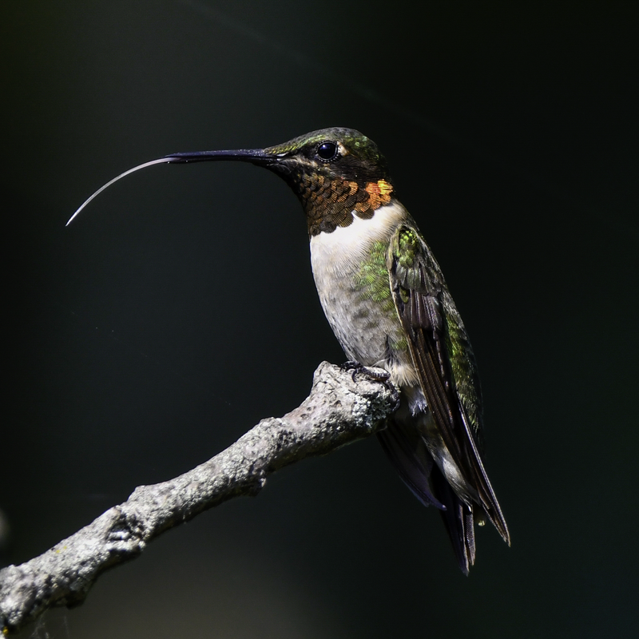
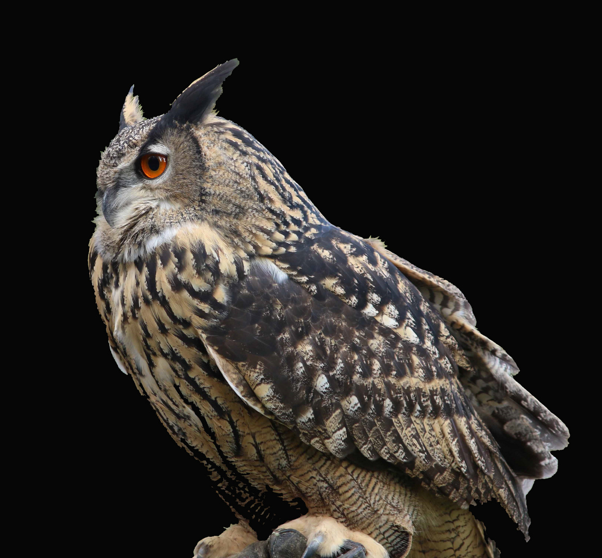
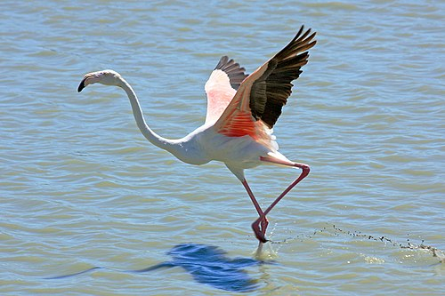

Guacamayo azulamarillo (Ara ararauna)
su habitat:Selvas húmedas y bosques tropicales de Sudamérica.
Alimentacion:Frugívora. Se alimenta de frutas, semillas, nueces y flores.
Dato curioso:Forma parejas para toda la vida y ayuda a dispersar semillas que regeneran los bosques.
Informacion general:Ave tropical grande, de plumaje azul intenso y amarillo brillante. Muy sociable e inteligente. Puede vivir más de 50 años.

Pingüino emperador (Aptenodytes forsteri)
su habitat:Costas heladas y mares fríos del continente antártico.
Alimentacion:Carnívoro. Se alimenta de peces, calamares y kril.
Dato curioso:Los machos incuban los huevos sosteniéndolos sobre sus patas bajo una bolsa de piel para protegerlos del frío mientras las hembras buscan alimento.
Informacion general: El más grande de los pingüinos. Vive en la Antártida y soporta temperaturas extremas. No vuela, pero es un excelente nadador.

Colibrí rubí (Archilochus colubris)
Hábitat: Bosques tropicales y jardines floridos de América Central y del Norte.
Alimentación: Nectarívoro. Se alimenta del néctar de flores y pequeños insectos.
Dato curioso: Puede batir sus alas hasta 80 veces por segundo y volar hacia atrás.
Información general: Ave diminuta y de vivos colores metálicos. Es fundamental para la polinización de plantas tropicales.

Búho real (Bubo bubo)
Hábitat: Bosques, montañas y zonas rocosas de Europa y Asia.
Alimentación: Carnívoro. Caza roedores, conejos y otras aves pequeñas.
Dato curioso: Tiene una visión nocturna excelente y puede girar la cabeza hasta 270°.
Información general: Ave rapaz de gran tamaño, con penachos sobre la cabeza que parecen orejas. Es un símbolo de sabiduría en muchas culturas.

Flamenco rosado (Phoenicopterus roseus)
Hábitat: Lagunas salinas, humedales y estuarios de África, América y el Mediterráneo.
Alimentación: Filtradora. Come algas, crustáceos y pequeños moluscos.
Dato curioso: Su color rosado proviene de los pigmentos carotenoides de su dieta.
Información general: Ave zancuda de cuello y patas largas. Se alimenta inclinando su pico al revés y vive en grandes colonias cerca del agua.